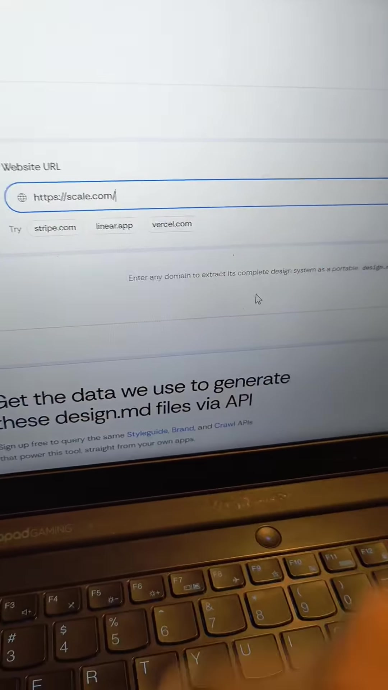
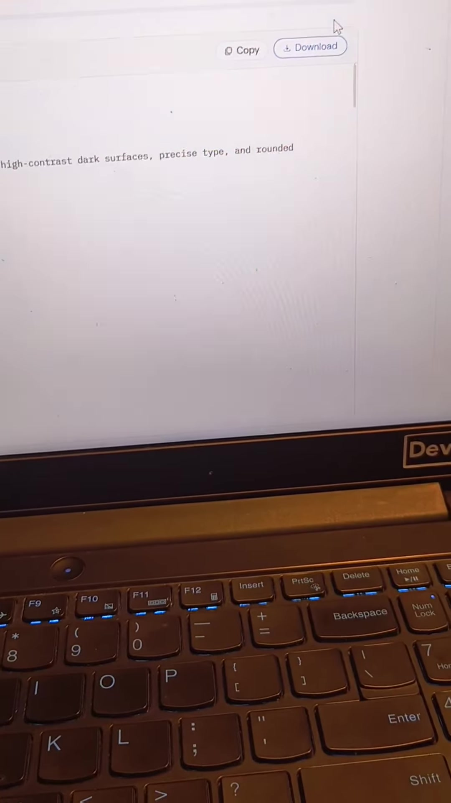

AI · Design-Tokens
Automated URL-to-DESIGN.md Extraction: Grounding AI Coding Agents with Precise Design Tokens
Key Takeaways
- The AI UI Replication Problem: Passing a raw website URL directly to an AI coding agent (Claude Code, Cursor, Windsurf, Antigravity) results in hallucinated color palettes, generic Tailwind defaults, mismatched font families, and imprecise padding.
- The DESIGN.md Solution: Instead of raw URLs, crawl and extract the target website's computed CSS tokens into a standardized, portable
DESIGN.mdspecification file. - Styleguide Extraction Pipeline: Tools like Context.dev / DesignMD capture full-page viewports, extract exact hex color tokens (surfaces, accents, opacities), and parse typography hierarchies (family, size, weight).
- Direct Agent Grounding: Supplying the generated
DESIGN.mdfile into your agent prompt guarantees pixel-accurate reproduction of enterprise-grade interfaces (e.g. Scale AI, Stripe, Linear).
Why Direct URL Prompting Fails Coding Agents
Developers frequently instruct LLM coding agents: "Build me a landing page that looks exactly like https://scale.com".
Because LLMs only receive textual DOM snippets or basic web scrapes without computed styling contexts, the agent defaults to generic AI aesthetic tropes:
- Flat purple/blue gradient backgrounds instead of deep layered dark surfaces (
#191A29,#161723). - Generic browser fonts (Inter, Roboto) instead of custom geometric grotesques (e.g. Aeonik).
- Inconsistent spacing scales without systematic surface elevation or tokenized borders.
The Automated URL-to-Token Workflow
1. Input Target Domain
Navigate to a design extraction service (e.g., Context.dev Styleguide API / DesignMD). Enter the domain you wish to inspect (e.g., https://scale.com/, stripe.com, linear.app).

2. Automated Headless Extraction
Click Generate Design.md. The background extraction pipeline executes three coordinated stages:
- Viewport Screenshot Capture: Renders desktop and mobile viewports in a headless browser engine.
- Computed Styleguide Parsing: Traverses CSS declarations across DOM nodes to identify primary colors, opacity variants, borders, and surface depths.
- Typography Normalization: Queries loaded font files, font-family declarations, headline scale ratios, and font-weight distributions.
3. Structured DESIGN.md Specification Output
The tool produces a concise, machine-readable DESIGN.md file (typically ~100–120 lines of structured YAML / Markdown tokens):
scale.com-design.md token file containing semantic color palettes, surface opacities, and Aeonik typography definitions.
version: alpha name: Scale Minimal Dark description: A restrained enterprise AI system with high-contrast dark surfaces, precise type, and rounded utility accents. colors: primary: "#FFFFFF" secondary: "#191A29" tertiary: "#374151" neutral: "#99999F" surface: "#191A29" on-surface: "#FFFFFF" accent: "#FF4444" primary-60: "#FFFFFF99" primary-40: "#FFFFFF66" surface-strong: "#161723" typography: headline-display: fontFamily: Aeonik fontSize: 56px fontWeight: 500
4. Grounding Your AI Coding Agent
Download the DESIGN.md file or paste its contents into your project workspace root.

Recommended Agent Prompt Formula
"I have attached DESIGN.md containing the exact design system tokens extracted from Scale.com. Use ONLY these tokenized color hex codes (primary: #FFFFFF, surface: #191A29, surface-strong: #161723), font scale (Aeonik display 56px/500 weight), and layout rules. Do NOT use default Tailwind colors or unstyled browser defaults."
Original Source Reference
Instagram Reel: https://www.instagram.com/reel/DepAa2_hPHQ/
Creator: @athar.codes (Athar Akram | XTHXR)
Caption: "This is what frontend developers need! . . . Ui design, frontend developer, ui, ux, website development..."